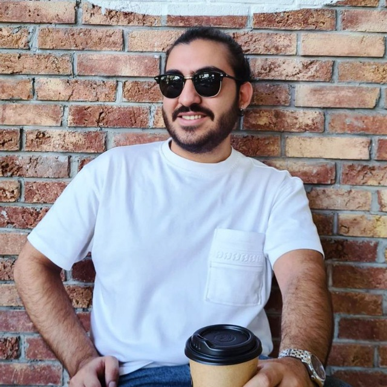

I am a research assistant at the Institute for Research in Fundamental Sciences (IPM) in Tehran, where I work with Arash Vaezi on fairness and reliability in multi-agent and decentralized systems. I finished my B.Sc. in Computer Science at the Department of Mathematical Sciences, Sharif University of Technology, in 2026, and I am still a teaching assistant there.
Much of my work so far has been building simulators to test theoretical results, and going back to the theory when the simulations disagree. I am also interested in networked and cyber-physical systems. I am applying to MSc programs for Fall 2027.

Outside research, I love playing table tennis and chess. If you are up for a game of either, let me know.
Fair routing for multi-agent traffic. When many vehicles share a road network, the route chosen for one changes the delay of the others. In FAIR, every traveller should end up with roughly the same ratio of actual to predicted travel time. I built an event-driven traffic simulator and evaluated FAIR on road networks from Berlin, London and Shanghai against a Google Maps-style navigation baseline: under heavy congestion, FAIR cleared the network 2.5 to 10 times faster and made travel times more predictable. I also worked on the theory, extending the envy-freeness theorem and finding counterexamples to two early lemmas, which we then reformulated.
The Loop of the Rings. A decentralized system in which participants cooperate in randomly formed rings and are checked by randomly chosen verification teams, with no central authority. I co-developed the Go simulator with Arshia Dadras and ran the simulation study: with at least 60% honest participants, the verification teams were right more than 90% of the time.
Self-organizing cellular networks. A survey of how 5G and 6G networks configure, optimize, heal and protect themselves. I wrote it with Ardalan Siavashpour, supervised by Hossein Peyvandi and Masoumeh Azadegan.
Earlier, I simulated a decentralized drone network (FANET) with ant-colony-based cluster routing in NS-3 with Bardia Safaei, and studied WebAssembly for systems acceleration with Gianni Antichi at Politecnico di Milano (remote).
Teaching Assistant, Sharif University of Technology
Designed and graded weekly assignments (120+ students in the largest classes), wrote rubrics, held office hours, guided projects and built autograders.
Course projects from my B.Sc.: